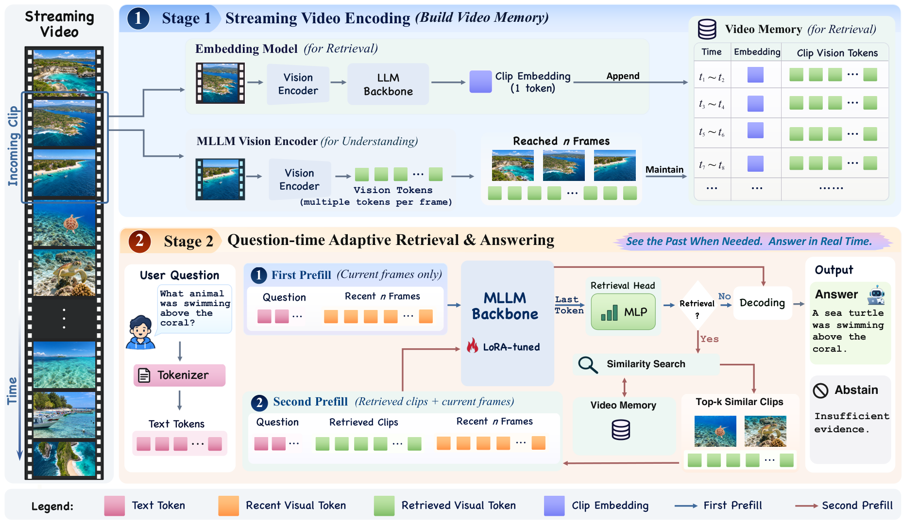

Paper Analysis
01 · Relevance and Sufficiency Are Different Questions
检索相似度回答“这个片段是否与问题相近”，证据充分性回答“这些帧是否足以确定答案”。出现某个物体并不等于记录了它被放到哪里，语义很相似的历史可能仍缺失关键动作。SPARE 将这两个判断分开。
它以 Qwen3-VL-8B-Instruct 理解视频，以 Embedding-2B 检索历史。输出是答案或拒答，任务是视频问答，没有深度、位姿或三维重建输出。对流式重建的启发来自何时读取记忆，而不是其问答准确率能够证明几何提升。
原文初步实验发现 CLIP 历史检索能提高历史问题准确率，却降低当前感知表现。更多上下文会改变注意力分配，也可能引入不匹配的时间证据；因此仅证明检索到语义相关帧还不够。
Paper Analysis
02 · Reading the Original Pipeline

Senbin Xu et al. · CC BY 4.0 · Original figure, unmodified · Paper & Caption ↗
图 2 上半部分将流分成不重叠片段，默认每段四秒、1 FPS。每个已完成片段产生一个归一化检索向量，同时保存时间区间以及访问原视觉内容的索引。向量用于搜索，最终回答仍读取对应帧，而不是直接把一个片段向量当成完整视觉证据。
下半部分先用问题与最近四帧执行 prefill。Retrieval Head 读取语言模型最终归一化后的最后有效输入 token 状态，输出当前证据不足的概率。阈值为 0.5；只有历史非空且门控触发，才检索。
历史候选的结束时间必须早于或等于当前窗口开始时间，以避免重叠。文本向量与候选向量做余弦排序，默认取 Top-1；历史四帧按时间排在当前四帧前，组成新的第二次输入。两次回答使用相同 LoRA 权重，第二次仍可以拒答。
图中共享编码器表示共享权重，不等于两个语言主干被合并，也不保证所有输入只编码一次。理解和检索保留各自语言主干；实际缓存复用和延迟还取决于执行路径。
M_t = {(z_i, [b_i,e_i), clip_i) : e_i ≤ start(current_t)}
score_i = normalize(E_text(question))^T z_i
retrieve = [sigmoid(g(h_last)) ≥ 0.5] AND [M_t is nonempty]Paper Analysis
03 · Three Training Stages with Separate Gradient Paths
第一步是共享视觉编码器的对齐。原 Embedding-2B 是冻结教师，学生使用理解模型的视觉编码器，通过四个独立线性适配器连接检索语言模型。三路 DeepStack 特征和一路最终特征都接受 cosine 与 SmoothL1 对齐，最终片段 embedding 另加 cosine 对齐。
只有四个 4608→2048 适配器更新，总计 37.76M 参数；教师、共享视觉编码器和检索语言主干均冻结。检索语言主干虽然不更新参数，学生端最终 embedding 损失仍需通过它回到输入适配器。教师目标 stop-gradient 与学生路径可微是不同概念。
第二步训练门控：以当前帧是否足以回答为标签，证据不足记为 1，用缓存的 4096 维输入状态训练约 1.06M 参数的 MLP。它不是判断模型刚才答错了没有，也不读取已生成答案。
第三步训练问答 LoRA：只在回答 token 与结束 token 上计算交叉熵，问题、图像和 padding 不计 loss。rank=16 的 LoRA 约 43.65M 参数，训练 173 个审查样本一个 epoch；基础模型、视觉编码器、检索器和门控冻结。然后冻结 LoRA，重新缓存其 prefill 状态，适配门控一个 epoch，以匹配部署时状态分布。
对齐用 64K 图像和 64K 视频条目，门控约 15K 问题。训练中的充分性由 Qwen3.8-27B 两次独立提示判定一致后保留，并非人工逐例语义真值。LoRA 使用的离线历史由原生 Embedding-8B 选取，部署使用共享视觉的 Embedding-2B；这种训练与部署差异也应保留在复现记录中。
L_distill = sum_j w_j [d_cos(S_j, stopgrad(T_j))
+ 0.1 SmoothL1(S_j, stopgrad(T_j))]
+ d_cos(e_student, stopgrad(e_teacher))
w = (0.1, 0.2, 0.3, 0.4)
L_gate = BCE(p_insufficient, 1 − answerable_current)
L_LoRA = mean answer-token cross-entropyPaper Analysis
04 · Which Ablations Actually Isolate Retrieval
OVO 主结果只覆盖 1468 个 Real-time 与 Backward 问题，排除 Forward Responding。先对组内任务做宏平均，再平均两个组；它不是完整 OVO 的所有任务分数，也不是全部问题直接平均。StreamingBench 用 4500 个问题，仍只输入视觉，未使用音频。
77.78% 相比原生 2 FPS 模型的 57.10% 包含上下文选择、训练和输入协议的综合改变。更贴近机制的对照是固定 shared ViT、LoRA 和门控权重，仅改变读取策略：recent-only 74.53，均匀历史 75.87，始终检索 77.19，门控检索 77.78。
这说明相关片段选择优于同帧数的均匀历史，门控主要减少历史使用而保持接近或略好的准确率。历史可用的 1460 个问题中，门控实际使用历史 598 次；不能把 40.74% 使用率直接当成节省了同样比例的总计算。
相同最大八帧输入下，八帧近期上下文为 74.87%，四帧近期加四帧检索为 77.78%；但后者可能有两次 prefill，不是等计算量。增加到 Top-2 或 Top-4 历史片段也未超过 Top-1。
| Policy | Real-time (%) | Backward (%) | Overall (%) | History Use (%) |
|---|---|---|---|---|
| Recent-only | 81.06 | 68.00 | 74.53 | 0.00 |
| Uniform history | 81.05 | 70.70 | 75.87 | 99.46 |
| Always retrieve | 81.16 | 73.22 | 77.19 | 99.46 |
| Gated retrieval | 81.93 | 73.62 | 77.78 | 40.74 |
Paper Analysis
05 · Where the Gains and Costs Come From
完整 shared-ViT LoRA 版本相对 SimpleStream 的 Backward 从 53.99 到 73.62，其中幻觉检测 HLD 从 52.69 到 90.32。固定 LoRA 后，recent-only 的 HLD 已是 90.32，门控检索仍是 90.32。这部分改善不能归功于取回了更多历史，拒答训练和模型行为变化是重要来源。
跨基准也有代价：shared ViT 加 LoRA 后 OVO 从 69.39 到 77.78，但 StreamingBench 从 74.22 降到 73.31。原生编码器、无 LoRA 的控制实验中，门控相对始终检索还略降 0.32 点。不能概括为门控或 LoRA 总能提高准确率。
直接检索评测揭示共享的代价：MMEB-V2 十八数据集 Top-1 从教师 56.13% 到学生 51.90%，五个 text-to-video 数据集从 47.48 到 43.40。下游问答相近不意味着检索表示无损。
2.87K 是每个问题跨回答 pass 的最大上下文长度再求均值，不含检索记忆；索引和历史片段仍随时间积累。它不是总内存恒定的证据。
约 183 ms TTFT 在一张 H100、batch=1 上测量，测试 16/64/256 已观察帧，90 个固定问题各重复三次。计时使用缓存视觉特征并在门控后直接路由，触发检索时跳过第一轮答案生成；准确率评估实现则先生成当前候选答案。计时还排除视频准备和状态恢复，不能解释为完整在线采集到答案的端到端延迟。
Paper Analysis
06 · What This Suggests for Reconstruction Memory
最可迁移的观点是把“相关”与“当前是否需要”分开。对流式重建，可以提出待检验假设：当前观测几何不确定时再增加历史读取，而不是每帧都读取同样数量的语义历史。监督信号应来自几何误差、可见性与观测一致性，不能直接照搬问答的充分性标签。
SPARE 主要改变读取，并保留可再次访问的原始视觉片段；它没有解决历史写入的固定容量压缩。与此前写入前融合方案应区分：一项研究语义如何进入留下的状态，另一项研究何时把已有历史送回预测网络。两者可以分别消融，不必一开始叠加。
本文阅读 v2（10 月 16 日修订），首次公开日期仍为 10 月 10 日。全文和补充材料已核对；论文未提供可直接核实的官方实现入口，本次检索也未找到，因而没有声称代码复现通过。
Discussion
Reading Questions
Does the gate predict whether retrieval will succeed?
不直接预测。标签是当前帧是否足够回答；历史可能存在但同样缺证据，第二轮仍应允许拒答。
Is external memory bounded by the eight-frame budget?
不是。八帧是第二次回答输入上限，外部片段索引和可访问视觉内容并未因此变成固定容量。
Can the score gain be attributed to retrieval alone?
不能。LoRA 与拒答行为贡献明显，应使用固定训练组件的策略对照估计检索作用。
Does shared vision mean one language model?
不是。视觉编码器权重共享，理解与检索语言主干仍独立，适配器负责对齐视觉表示。
References
One original method figure is included for scholarly analysis. First-submission dates are distinguished from the reading version. Results are author-reported; no local reproduction has been performed.
Verified on 2026-11-01. Paper results refer to the linked versions. Repository references were checked on this date.